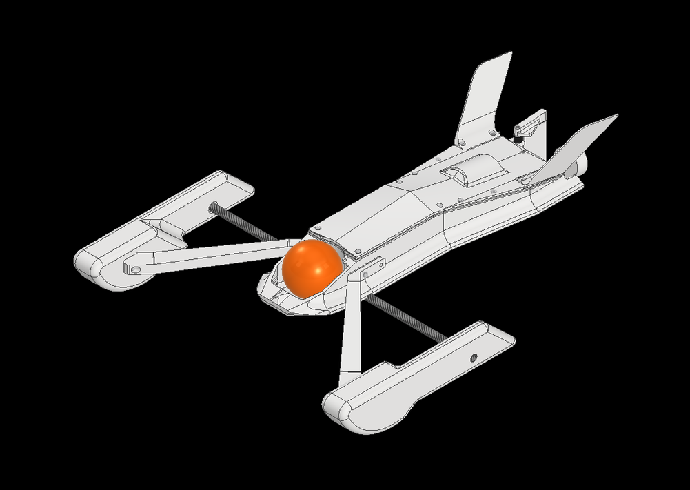
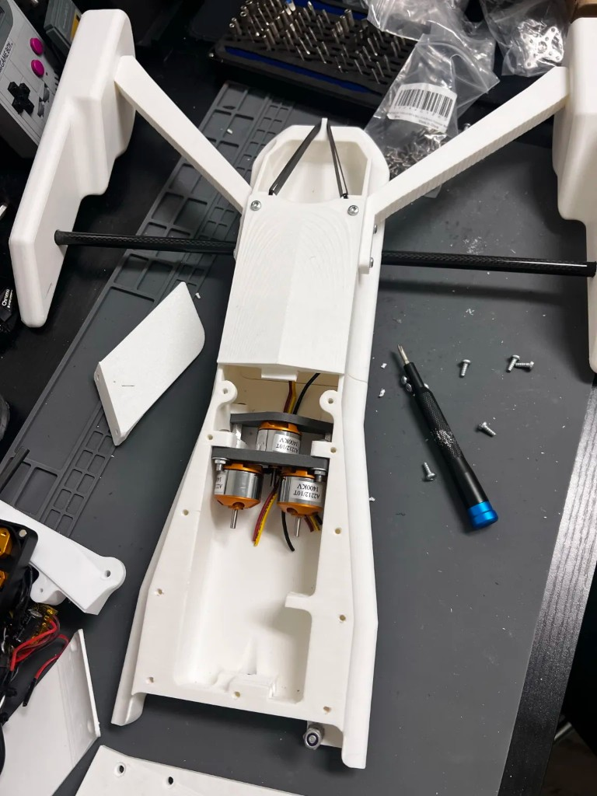
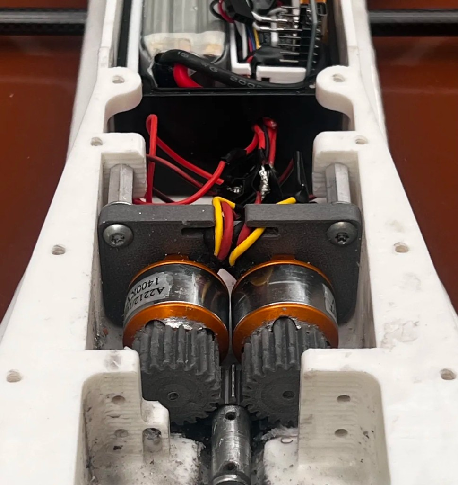
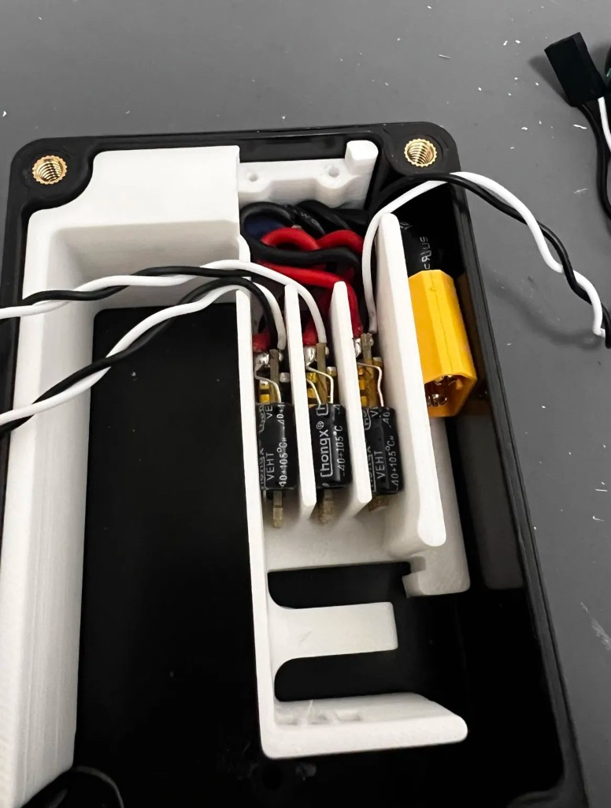
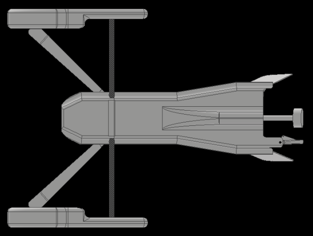

High-Speed Autonomous Boat
Fully 3D Printed Autonomous Race Boat

Designed a 40 mph dual-rigger autonomous boat, using three BLDC motors, a custom GF-Nylon gearbox, and an ABS waterproofed casing to package ESCs, BECs, an ESP32, and IMU. Designed and implemented a custom PID controller in C++ using IMU sensor feedback for PWM-controlled servo rudder angle, improving autonomous navigation accuracy by 60%.



